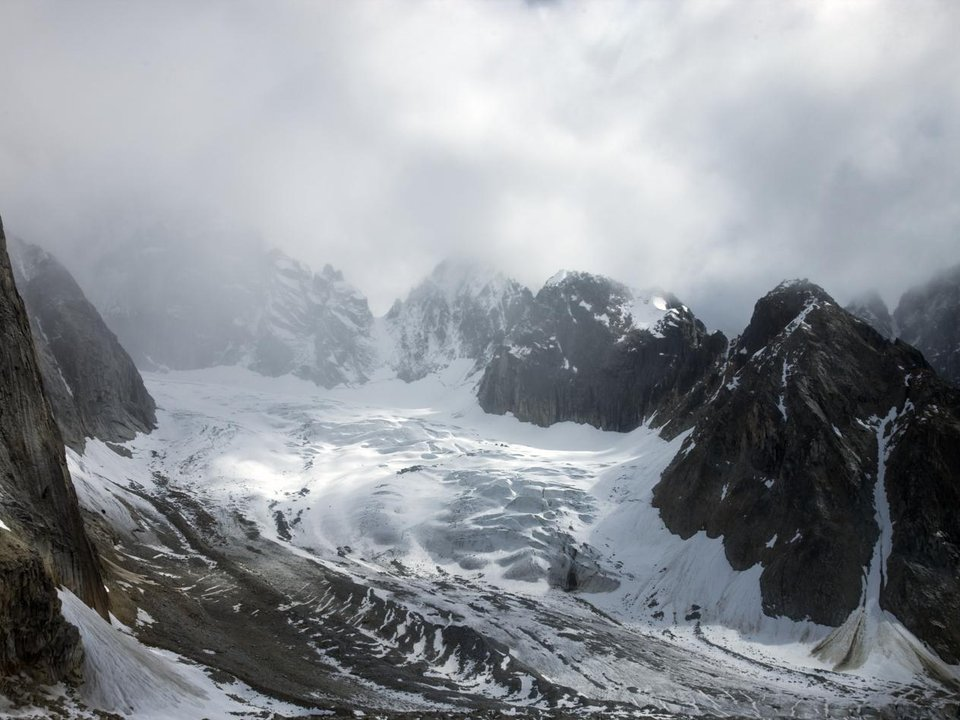

On the bluff · Lodge
Talkeetna Alaskan Lodge
A lodge above the river with views of Denali on clear days.
Official details for Talkeetna Alaskan LodgeGlacier landings at the foot of Denali.
Talkeetna is a small, quirky town where three rivers meet, and on a clear day Denali fills the northern sky. It is the base for Denali climbing expeditions and for flightseeing tours that land on glaciers in the Alaska Range. Fly in from Anchorage, about 70 nm, walk Main Street, stay at the Talkeetna Alaskan Lodge on the bluff, eat at the Roadhouse and book a glacier landing with one of the local air services.

Time illustration: direct distance at 150 KTAS plus 15 minutes for departure and arrival, matching the discovery page. Use ForeFlight for your actual flight plan.
PATK, Talkeetna, is a non-towered state airport at 365 feet with a 3,500-foot paved runway, a short walk from downtown. Expect lots of ski-plane and flightseeing traffic in summer.
Talkeetna Airport, Talkeetna, AK
Busy CTAF with tour aircraft; listen carefully. Glacier landings in the Alaska Range are for trained, equipped pilots; most visitors fly with a local air service. No live fuel price is shown.
Southcentral Alaska flying: fast-changing weather, low ceilings in mountain passes, strong winds on the coast and over glaciers, long summer daylight and short winter days. Carry survival gear, file a flight plan and check the FAA weather cameras. From the lower 48 this is an expedition, not a weekend: the usual route is the Alaska Highway through Canada (customs, eAPIS and Canadian survival-equipment rules), roughly a week each way. Most visitors are Alaska-based pilots, or fly commercially and book local air taxis and flightseeing.
Rates and availability need travel dates. Summer books months ahead.
A lodge above the river with views of Denali on clear days.
Official details for Talkeetna Alaskan LodgeCabins and inns around town.
Talkeetna Chamber for More places to stayReserve weekend dinners.
Sourdough pancakes and pie in a historic roadhouse.
Official details for Talkeetna RoadhouseLocal beer and food in town.
Official details for Denali BrewingFlightseeing depends on the weather; build in a spare day.
This prototype links to the local visitor site. It does not yet match events to your travel dates.
Glacier landings on clear days.
K2 Aviation for Flightseeing seasonNearly 20 hours of daylight in June.
Talkeetna Chamber for Midnight sunAurora on clear, dark nights.
Talkeetna Chamber for Northern lightsCheck the local calendar when choosing a weekend, and confirm dates and tickets with the organizer.
A sample Talkeetna weekend. Written for Alaska-based pilots and visitors already in Alaska. No bookings or availability confirmed.
Land at PATK mid-morning.
A Denali flightseeing tour with a glacier landing.
Main Street and pie at the Roadhouse, then back to the airport.
Land at PATK, subject to weather and your actual flight plan.
Main Street and the river.
Dinner at Denali Brewing.
A Denali flightseeing tour with a glacier landing.
A rest at the lodge.
Dinner with a mountain view.
Breakfast at the Roadhouse.
Allow time at the airport or dock.
Alaska weather changes fast; keep a margin and an alternate.
A river walk.
A second flightseeing route or a float trip.
Dinner at Denali Brewing.
These details make the difference between an appealing list and a usable getaway.
Lodge, then a flightseeing tour.
About 70 nm north.
Clear Denali days are not guaranteed; plan a spare day.
June to August.
Picks and links reviewed by WingAway Weekends. Hours, prices, menus and availability change often, so confirm directly with each place before booking. Spotted something out of date, or have a favorite we missed? Email us at hello@wingawayweekends.com.
WingAway Weekends helps you discover the destination. Use ForeFlight and current official aviation information for route, performance, weather, NOTAMs and preflight decisions. Flight planning and PIC responsibility stay with the pilot.
One fly-in weekend, a Fly to Lunch pick and the newest guides, about once a month.
Free. Unsubscribe anytime.